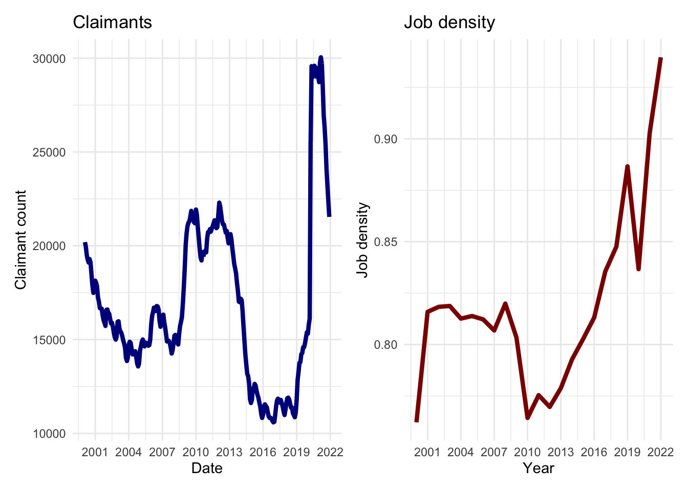
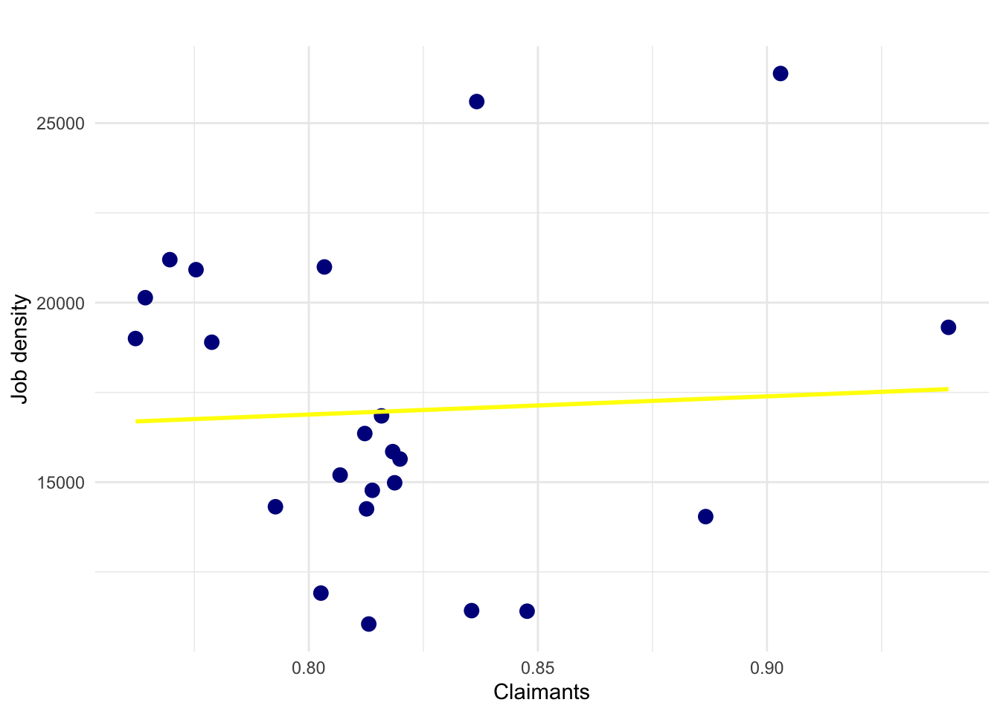

library(tidyverse)
library(patchwork)4 Data modeling
This session will provide an introduction to linear regression and time series modelling in R. It will first explain the fundamentals of regression modelling, including model estimation, interpretation and calibration. Then, it will focus on time series data modelling, particularly the use of ARIMA models.
4.1 Learning objectives
By the end of today's session you should be able to:
Understand how to estimate, interpret and calibrate linear regression and ARIMA models;
Be familiar with the main assumptions and challenges of these models;
Use these models to produce predictions.
4.2 Dependencies
4.3 Data
Read and explain data
4.3.1 Out-of-work benefits
Under Universal Credit a broader span of claimants are required to look for work than under Jobseeker’s Allowance. As Universal Credit Full Service is rolled out in particular areas, the number of people recorded as being on the Claimant Count is therefore likely to rise.
- Claimant Count (Experimental Statistics)
-
The Claimant Count is the number of people claiming benefit principally for the reason of being unemployed. This is measured by combining the number of people claiming Jobseeker’s Allowance (JSA) and National Insurance credits with the number of people receiving Universal Credit principally for the reason of being unemployed. Claimants declare that they are out of work, capable of, available for and actively seeking work during the week in which the claim is made.
The measure of the number of people receiving Universal Credit principally for the reason of being unemployed is still being developed by the Department for Work and Pensions. Consequently this component of the total Claimant Count does not yet correctly reflect the target population of unemployed claimants and is subject to revisions. For this reason the Claimant Count is currently designated as Experimental Statistics.
The Claimant Count is mostly derived from DWP administrative systems. For various reasons, e.g. a claimant’s National Insurance number is not known, a small number of claims have to be dealt with manually. These clerical claims do not have as much detail as the computerised claims and therefore, whilst part of the claimant count by sex table, cannot be included the age breakdown.
df_claimants <- read_csv("./data/claimants/claimants_liverpool.csv",
col_types = cols(
date = col_date(format = "%B %Y"),
count = col_number()
)
)
head(df_claimants)# A tibble: 6 × 2
date count
<date> <dbl>
1 1992-01-01 40165
2 1992-02-01 40145
3 1992-03-01 39880
4 1992-04-01 40000
5 1992-05-01 39790
6 1992-06-01 39425- Jobs Density
-
The level of jobs per resident aged 16-64. For example, a job density of 1.0 would mean that there is one job for every resident aged 16-64.
The total number of jobs is a workplace-based measure and comprises employee jobs, self-employed, government-supported trainees and HM Forces. The number of residents aged 16-64 figures used to calculate jobs densities are based on the relevant mid-year population estimates.
df_job.density <- read_csv("./data/job-density/job-density_liverpool.csv",
col_types = cols(
year = col_date(format = "%Y"),
job_density = col_number()
)
)
head(df_job.density)# A tibble: 6 × 2
year job_density
<date> <dbl>
1 2000-01-01 0.762
2 2001-01-01 0.816
3 2002-01-01 0.818
4 2003-01-01 0.819
5 2004-01-01 0.813
6 2005-01-01 0.814df_stringency <- read_csv("./data/stringency/owid-covid-data.csv") %>%
dplyr::select(location,
date,
stringency_index) %>%
dplyr::filter(location == "United Kingdom")Rows: 401008 Columns: 67
── Column specification ────────────────────────────────────────────────────────
Delimiter: ","
chr (4): iso_code, continent, location, tests_units
dbl (62): total_cases, new_cases, new_cases_smoothed, total_deaths, new_dea...
date (1): date
ℹ Use `spec()` to retrieve the full column specification for this data.
ℹ Specify the column types or set `show_col_types = FALSE` to quiet this message.str(df_stringency)tibble [1,590 × 3] (S3: tbl_df/tbl/data.frame)
$ location : chr [1:1590] "United Kingdom" "United Kingdom" "United Kingdom" "United Kingdom" ...
$ date : Date[1:1590], format: "2020-01-05" "2020-01-06" ...
$ stringency_index: num [1:1590] 0 0 0 0 0 0 0 0 0 0 ...4.4 Inspecting the data
Visually explore the data and describe main patterns
p1 <- ggplot(data = df_claimants, aes(x = date, y = count)) +
geom_line(colour = "darkblue", linewidth = 1.5) +
labs(title = "Claimants", x = "Date", y = "Claimant count") +
scale_x_date(date_labels = "%Y", date_breaks = "5 year") +
theme_minimal()p2 <- ggplot(data = df_job.density,
aes(x = year, y = job_density)) +
geom_line(colour = "darkred", linewidth = 1.5) +
labs(title = "Job density", x = "Year", y = "Job density") +
scale_x_date(date_labels = "%Y", date_breaks = "3 year") +
theme_minimal()
p1 + p2
p3 <- ggplot(data = df_stringency,
aes(x = date, y = stringency_index)) +
geom_line(colour = "lightgrey", linewidth = 1.5) +
labs(title = "Stringency index", x = "Date", y = "Stringency index") +
scale_x_date(date_labels = "%b %Y", date_breaks = "6 month") +
theme_minimal()p1 <- ggplot(data = df_claimants %>%
dplyr::filter(date > "2000-01-01" & date < "2022-01-01"),
aes(x = date, y = count)) +
geom_line(colour = "darkblue", linewidth = 1.5) +
labs(title = "Claimants", x = "Date", y = "Claimant count") +
scale_x_date(date_labels = "%Y", date_breaks = "3 year") +
theme_minimal()
p1 + p2
4.5 Data wrangling
Create a dataset for modelling
df_claimants$year <- year(df_claimants$date)
df_claimants.year <- df_claimants %>%
group_by(year) %>%
summarise( annual_claimants = round( mean(count) ))df_job.density$year2 <- year(df_job.density$year)df_modelling <- left_join(df_claimants.year,
df_job.density,
by = join_by(year == year2)
)
df_modelling <- df_modelling[complete.cases(df_modelling), ]
head(df_modelling)# A tibble: 6 × 4
year annual_claimants year.y job_density
<dbl> <dbl> <date> <dbl>
1 2000 19000 2000-01-01 0.762
2 2001 16846 2001-01-01 0.816
3 2002 15850 2002-01-01 0.818
4 2003 14982 2003-01-01 0.819
5 2004 14255 2004-01-01 0.813
6 2005 14772 2005-01-01 0.8144.6 Linear regression
Explain what a linear regression does and the key components of a linear regression.
\[ y = \alpha + \beta_1 x_1 + \beta_2 x_2 + \beta_3 x_3 + … + \epsilon_i \]
Fit a model
eq1 <- annual_claimants ~ job_density
lm1 <- lm(eq1,
data = df_modelling)
# estimates
summary(lm1)
Call:
lm(formula = eq1, data = df_modelling)
Residuals:
Min 1Q Median 3Q Max
-5901 -2611 -1126 2872 8978
Coefficients:
Estimate Std. Error t value Pr(>|t|)
(Intercept) 12833 17522 0.732 0.472
job_density 5062 21374 0.237 0.815
Residual standard error: 4341 on 21 degrees of freedom
Multiple R-squared: 0.002664, Adjusted R-squared: -0.04483
F-statistic: 0.0561 on 1 and 21 DF, p-value: 0.8151Interpretation
ggplot(df_modelling, aes(x = job_density, y = annual_claimants)) +
geom_point(color = "darkblue", size = 3) +
geom_smooth(method = "lm", se = FALSE, color = "yellow") +
labs(title = " ", x = "Claimants", y = "Job density") +
theme_minimal()`geom_smooth()` using formula = 'y ~ x'
dummy variables
multicollinearity
4.7 Time series data modelling
autoregressive (AR)
seasonality / integration / diffencing (I)
moving average (MA)
ARIMA
ARIMAX (adding Xs)